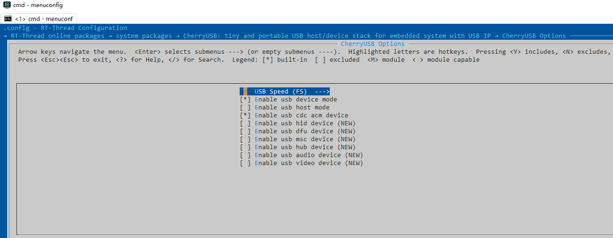
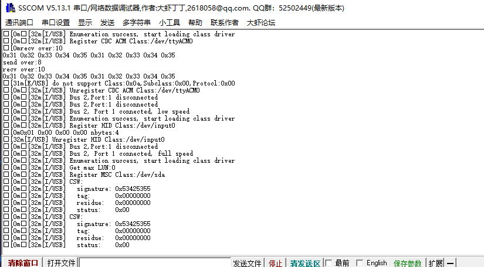
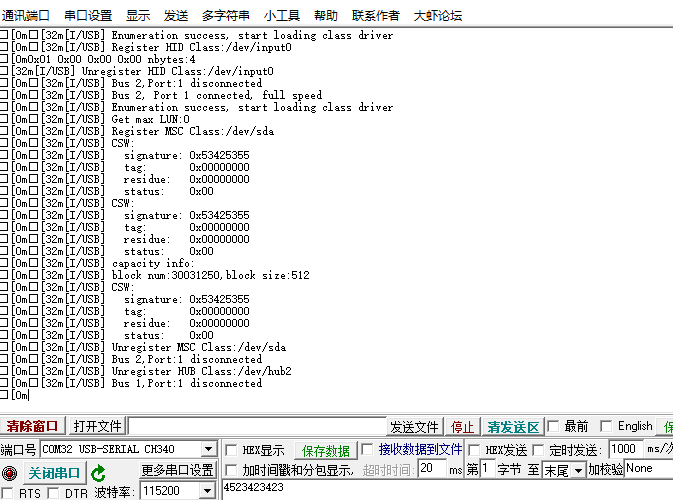
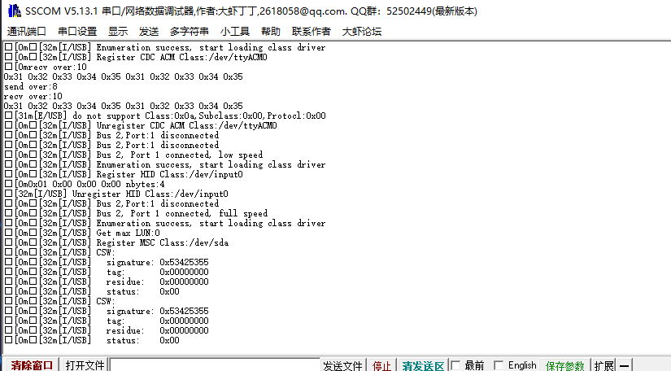
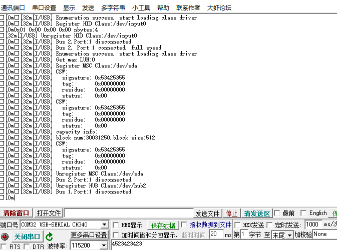

基于 RT-Thread 软件包开发指南¶
使用 CherryUSB package 需要在 RT-Thread 的包管理器中选择它，具体路径如下：
-> RT-Thread online packages
-> system packages
--- CherryUSB: tiny and portable USB stack for embedded system with USB IP
CherryUSB Options ---->
USB Speed (FS) --->
[*] Enable usb device mode
[ ] Enable usb host mode
[*] Enable usb cdc acm device
[ ] Enable usb hid device
[ ] Enable usb dfu device
[ ] Enable usb msc device
[ ] Enable usb hub device
[ ] Enable usb audio device
[ ] Enable usb video device
Version (latest) --->
基于 STM32 平台¶
STM32 系列单片机有两种 USB IP,分别是 USB IP 和 USB OTG IP。其中 USB IP，例如 STM32F0、STM32F1、STM32F3等等，USB OTG IP(我们都知道用的是 synopsys 公司的)的有 STM32F4、STM32F7、STM32H7等等。当前如果你需要使用 USB Device 功能，porting 接口提供了两种，一种是适配 USB IP的 fsdev,另一种是适配 USB OTG IP 的 synopsys。
使用 USB Device 功能¶
首先，你需要有一个 bsp 工程，之后进入到
board\CubeMX_Config目录下，使用 STM32CubeMX 打开后缀名为.ioc的文件。进入 Connectivity 选项，选择 USB 或者 USB_OTG_FS 或者 USB_OTG_HS，并使能 device 功能，在 NVIC Setting 中开启 USB 中断。

在 Clock configuration 栏配置 USB 时钟为 48Mhz.

点击 Generate code。
复制 SystemClock_Config 函数内容到 board.c 中。
实现
usb_dc_low_level_init，并将HAL_PCD_MspInit里面内容复制进来，例如：
void usb_dc_low_level_init(void)
{
/* Peripheral clock enable */
__HAL_RCC_USB_CLK_ENABLE();
/* USB interrupt Init */
HAL_NVIC_SetPriority(USB_LP_CAN1_RX0_IRQn, 0, 0);
HAL_NVIC_EnableIRQ(USB_LP_CAN1_RX0_IRQn);
}
由于协议栈默认使用
printf和malloc和free,所以需要开启 libc 支持或者自己实现。
使用 menuconfig 配置 CherryUSB 软件包，使能 usb device 并勾选需要的 device class。 
现在我们可以调用 CherryUSB 中的函数来注册描述符、接口、端点中断，并调用
usb_dc_init，示例如下：
#include <rtthread.h>
#include <rtdevice.h>
#include <board.h>
#include <stdio.h>
extern void usb_dc_init(void);
int main(void)
{
extern void cdc_init(void);
cdc_init();
usb_dc_init();
while (1)
{
uint8_t data_buffer[10] = { 0x31, 0x32, 0x33, 0x34, 0x35, 0x31, 0x32, 0x33, 0x34, 0x35 };
usbd_ep_write(0x81, data_buffer, 10, NULL);
rt_thread_mdelay(500);
}
}
关于如何注册 class 类可以参考 stm32 class examples。
使用 USB Host 功能¶
首先，你需要有一个 bsp 工程，之后进入到
board\CubeMX_Config目录下，使用 STM32CubeMX 打开后缀名为.ioc的文件。进入 Connectivity 选项，选择 USB_OTG_FS 或者 USB_OTG_HS，并使能 host only 功能，在 NVIC Setting 中开启 OTG GLOBAL 中断，其余两个端点中断不需要。

在 Clock configuration 栏配置 USB 时钟为 48Mhz.
点击 Generate code。
复制 SystemClock_Config 函数内容到 board.c 中。
修改 usb_hc_synopsys.c 中 HAL 库头文件包含，例如
#include "stm32f4xx_hal.h"。手动增加 xxx_hal_hcd.c 和 xxx_ll_usb.c 文件
由于协议栈默认使用
printf和malloc和free,所以需要开启 libc 支持或者自己实现。使用 menuconfig 配置 CherryUSB 软件包，使能 usb host（默认加载所有支持的 class）。

main.c中调用usbh_initialize初始化 host 协议栈。
#include <rtthread.h>
#include <rtdevice.h>
#include <board.h>
#include "usbh_core.h"
/* defined the LED0 pin: PH10 */
#define LED0_PIN GET_PIN(H, 10)
int main(void)
{
/* set LED0 pin mode to output */
rt_pin_mode(LED0_PIN, PIN_MODE_OUTPUT);
usbh_initialize();
while (1)
{
rt_pin_write(LED0_PIN, PIN_HIGH);
rt_thread_mdelay(500);
rt_pin_write(LED0_PIN, PIN_LOW);
rt_thread_mdelay(500);
}
}
 


视频教程¶
如果对上述步骤还有问题，可以参考 协议栈在 RT-Thread 包管理器中的使用。